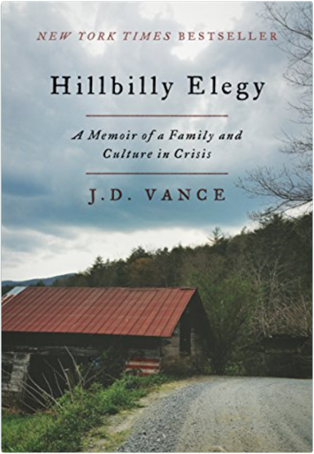
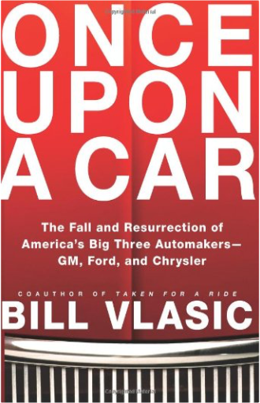
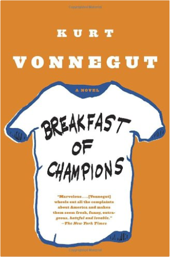
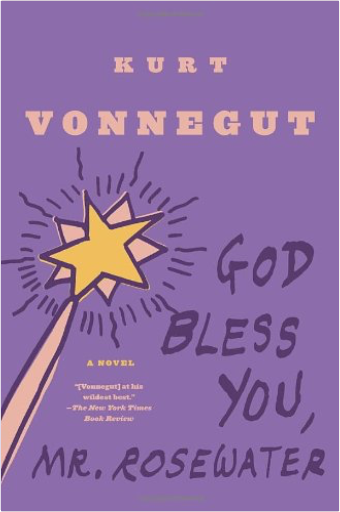
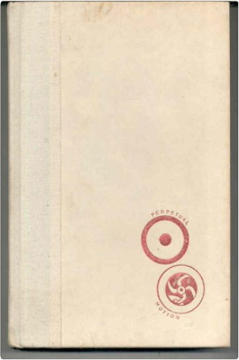
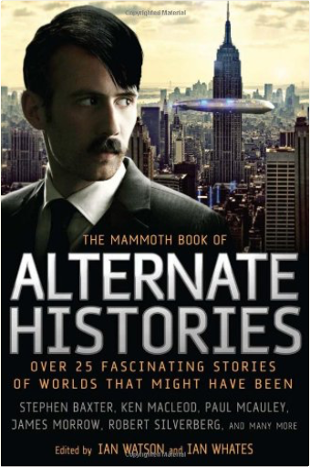
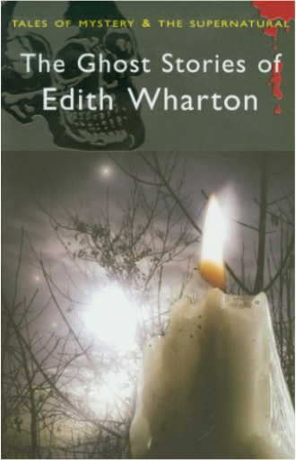

The Guns of the SouthHarry Turtledove  "It is absolutely unique—without question the most fascinating Civil War novel I have ever read."  Hillbilly Elegy: A Memoir of a Family and Culture in CrisisJ. D. Vance#1 NEW YORK TIMES BESTSELLER, NAMED BY THE TIMES AS ONE OF "6 BOOKS TO HELP UNDERSTAND TRUMP'S WIN"  Once Upon a CarBill VlasicOnce Upon a Car is the fascinating epic story of the rise, fall, and rebirth of the Big Three U.S. automakers, General Motors, Ford, and Chrysler. Written by Bill Vlasic, the Detroit bureau chief for the New York Times and acclaimed author of Taken for a Ride, this eye-opening, richly anecdotal work is more than a riveting and insightful business history. It offers a clear-eyed view of the present day automobile industry and of Detroit, the city that spawned it, going far beyond the corporate and federal maneuverings to explore the impact the car companies’ failures have had on the overall economy, and more importantly what they have done to people’s lives. Relevant and thought-provoking, Once Upon a Car is an unforgettable journey deep inside this quintessentially American industry.  Breakfast of Champions: A NovelKurt VonnegutIn Breakfast of Champions, one of Kurt Vonnegut’s most beloved characters, the aging writer Kilgore Trout, finds to his horror that a Midwest car dealer is taking his fiction as truth. What follows is murderously funny satire, as Vonnegut looks at war, sex, racism, success, politics, and pollution in America and reminds us how to see the truth.  God Bless You, Mr. Rosewater: A NovelKurt VonnegutEliot Rosewater—drunk, volunteer fireman, and President of the fabulously rich Rosewater Foundation—is about to attempt a noble experiment with human nature . . . with a little help from writer Kilgore Trout. God Bless You, Mr. Rosewater is Kurt Vonnegut’s funniest satire, an etched-in-acid portrayal of the greed, hypocrisy, and follies of the flesh we are all heir to.  Hocus PocusKurt VonnegutHocus Pocus is the fictional autobiography of a West Point graduate who was in charge of the humiliating evacuation of U.S. personnel from the Saigon rooftops at the close of the Vietnam War. Returning home from the war, he unknowingly fathered an illegitimate son. In 2001, the son begins a search for his father and catches up with him just in time to see him arrested for masterminding the prison break of 10,000 convicts. Using his famous brand of satire and wit, Vonnegut captures twenty-first century America as only he could foresee it. In Hocus Pocus, listeners will find a fresh novel, as fascinating and brilliantly offbeat as anything he's written. The Sirens of Titan: A NovelKurt Vonnegut The Sirens of Titan is an outrageous romp through space, time, and morality. The richest, most depraved man on Earth, Malachi Constant, is offered a chance to take a space journey to distant worlds with a beautiful woman at his side. Of course there’s a catch to the invitation–and a prophetic vision about the purpose of human life that only Vonnegut has the courage to tell. Slaughterhouse-Five: A NovelKurt Vonnegut Slaughterhouse-Five, an American classic, is one of the world’s great antiwar books. Centering on the infamous firebombing of Dresden, Billy Pilgrim’s odyssey through time reflects the mythic journey of our own fractured lives as we search for meaning in what we fear most.  The Mammoth Book of Alternate HistoriesIan Watson, Ian WhatesEvery short story in this wonderfully varied collection has in common some diversion in history, some alternate reality from what we know, resulting in a very different world. In addition to original stories specially commissioned from bestselling writers such as James Morrow, Stephen Baxter, and Ken MacLeod, there are genre classics from Kim Stanley Robinson, Harry Turtledove, and George Zebrowski: over 20 stories in all. A Rulebook for ArgumentsAnthony Weston A Rulebook for Arguments is a succinct introduction to the art of writing and assessing arguments, organized around specific rules, each illustrated and explained soundly but briefly. This widely popular primer—translated into eight languages—remains the first choice in all disciplines for writers who seek straightforward guidance about how to assess arguments and how to cogently construct them.  Ghost Stories of Edith WhartonEdith WhartonTraumatised by ghost stories in her youth, Pulitzer Prize winning author Edith Wharton (1862 -1937) channelled her fear and obsession into creating a series of spine-tingling tales filled with spirits beyond the grave and other supernatural phenomena. While claiming not to believe in ghosts, paradoxically she did confess that she was frightened of them. Wharton imbues this potent irrational and imaginative fear into her ghostly fiction to great effect. In this unique collection of finely wrought tales Wharton demonstrates her mastery of the ghost story genre. Amongst the many supernatural treats within these pages you will encounter a married farmer bewitched by a dead girl; a ghostly bell which saves a woman's reputation; the weird spectral eyes which terrorise the midnight hours of an elderly aesthete; the haunted man who receives letters from his dead wife; and the frightening power of a doppelganger which foreshadows a terrible tragedy. Compelling, rich and strange, the ghost stories of Edith Wharton, like vintage wine, have matured and grown more potent with the passing years. Our Town: A Play in Three ActsThornton Wilder Our Town was first produced and published in 1938 to wide acclaim. This Pulitzer Prize–winning drama of life in the town of Grover 's Corners, an allegorical representation of all life, has become a classic. It is Thornton Wilder's most renowned and most frequently performed play. |
 Made with Delicious Library
Made with Delicious LibrarySpringfield, State zipflap congrotus delicious library Pedrie, John